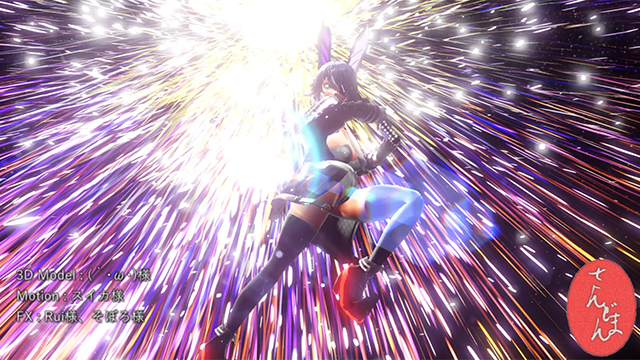
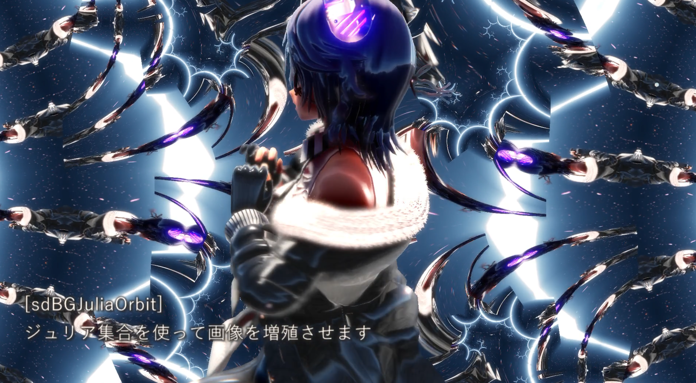

{kind=link}

{kind=link}
{kind=link}
放射状にパーティクルを撃ちます
放射状に弾幕を撃ちます
曲面の上をパーティクルが走ります
IoriKomatsu氏配布の"scale.fx対応ray-mmd"専用
連続面毎に分解エフェクトに煙と光を入れます
2019年11月ごろから意外といっぱい作れたので「どれがどんなエフェクトだったか忘れちゃった！」となってきましたので、まとめページを作ってみました。
ニコニコのコンテンツツリー親作品にご登録いただける場合は、各エフェクトの配布動画(静画)を登録するとよいとおもいます！
商用・非商用問わず自由にお使いください。使い方や利用範囲等については配布アーカイブ内のドキュメントをお読みください。
|  | |
||
| sdPRadi 放射状にパーティクルを撃ちます |
sdPShot 放射状に弾幕を撃ちます |
sdPSurface 曲面の上をパーティクルが走ります |
sdPostFractureSmoke IoriKomatsu氏配布の"scale.fx対応ray-mmd"専用 連続面毎に分解エフェクトに煙と光を入れます |
初公開：2020-0405
sdPはそぼろ様作WorldSnowを元に作成した「のびるパーティクルを撃てるエンジン」です。それを元に3つのエフェクトを作りました。
また、IoriKotatsu様によるscale.fx対応ray-mmd(ray-mmdの原作者はRui様、scale.fxの原作者は針金P様)が対応している「連続面毎に分解エフェクト」(原作者はわたり様)に対して煙と光を付けるエフェクトも同時配布となりました。
 |
 |
||
| sdGroundFog 床面に潜れる雲を描きます |
sdRayCube 立方体を山のように描きます |
sdRayUmeboshi 梅干しなどを山のように描きます |
sdMengerSponge いっぱい穴の開いたドーナツを描きます |
初公開：2020-0315
 |
 |
||
| sdLifeGame 背景にライフゲームを描きます |
sdBlurWind 映像を上方向に向かってゆらぐようにぼかします 前景にはカブりません |
sdMold 任意の色のピクセルをカビのように生やします |
sdFluid2D 2D流体シミュレータです |
初公開：2020-0220
| sdTransition クロスフェード風エフェクトです 25種類の効果が入っています |
sdSimpleFade 指定した一色に向かってフェードイン・アウトします |
sdShutter シャッターのようにテクスチャを下ろします シャッターの枚数・柄は変えられます |
 |
||
| sdAddNoise 劣化・故障したブラウン風のゆがみ・ノイズを加えます |
sdNTSC 解像度を縮退し、シャドウマスク風の滲みを加えます |
初公開：2020-0206
| sdBGAurora オーロラのような物を描きます |
sdInfiniteMob モブ絵を描いた書き割りを無数に生やします |
sdBGVolKuraudo 水平面と平行に雲を描きます |
sdBGGoddoKuraudo 雲付きゴッドレイを描きます |
初公開：2020-0117
| お借りしたもの | ||
| 3DModel | 天龍改二 | (｀・ω・)様 |
| Accessory | 山田式猫グローブ | 山田淀子様 |
| BG | 千本鳥居風ステージ | torisutsuki様 |
| Motion | ノリノリダンス | Plover様 |
 |
|||
| sdBGManyTV 2Dで回転・拡大・縮小しつつタイリング表示をします |
sdBGKaleido 簡易万華鏡シミュレータを使って元画像を増殖させます |
sdBGRotoZoom パース付きで回転・拡大・縮小をします |
sdBGPizza ピザ切り状に画面を分割します |
|  |  |
||
| sdBGJuliaOrbit ジュリア集合を使って元画像を増殖・変形します |
sdBGMaru 同心円上に小円をならべ、小円の中に元画像を貼り付けます |
sdBGSSCopipe スタンプツールのようにコピペを行って前景を増殖させます |
sdBGJuliaOrbitBMP BitmapOrbitTrapを用いて元画像を増殖させます |
初公開：2020-0101
| お借りしたもの | ||
| 3DModel | 天龍改二 | (｀・ω・)様 |
| Motion | ハイファイレイヴァー | アガちん様 |
| sdBGKuraudo 背景に雲を描きます |
sdBGRainbow 背景に虹を描きます |
sdBGSpark 背景に光条を描きます |
 |
 |
|
| sdBGMecha 背景にメカっぽい洞窟のような物を描きます(語彙力) |
sdBGGrid 背景に格子模様を描きます |
初公開：2019-1218
| お借りしたもの | ||
| 3DModel | 天龍改二 | (｀・ω・)様 |
| Motion | GravityRain | reno様 |
| sdHaku あなたのMMDに箔を付けます |
初公開：2019-1206
| お借りしたもの | ||
| 3DModel | 牛崎潤美 | (｀・ω・)様 |
| Motion | Scutellaria | reno様 |
{kind=link}
{kind=link}
{kind=link}
{kind=link}
{kind=link}
{kind=link}
{kind=link}
{kind=link}
{kind=link}
{kind=link}
{kind=link}
{kind=link}
{kind=link}
{kind=link}
{kind=link}
{kind=link}
{kind=link}
{kind=link}
{kind=link}
{kind=link}
{kind=link}
{kind=link}